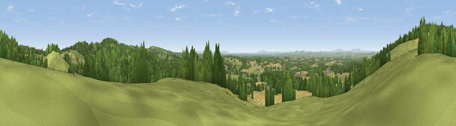

Viewpoint near Clent
#10382 in England · top 11% of its area beats it · near ClentWhere it is
The exact computed spot (SO 94375 78525). Click the marker for map links.
The view, rendered

A 360° render of this exact spot computed from the terrain model, tree cover and land cover — summer colours, afternoon light, calibrated against photographs of famous viewpoints. Real trees, hedges and buildings will differ in detail.
The panorama
Grey silhouette: terrain skyline in each direction (720 bearings, Earth curvature and refraction included). Dashed green: skyline with trees (+15 m) and buildings (+8 m) as obstacles. Blue strip: how far the ground is visible on each bearing.
Where the view opens
Wedge length = distance to the farthest visible ground on that bearing (vegetation-aware). Rings at 10, 25 and 50 km.
What fills the view
41% grassland · 40% woodland · 18% cropland · 1% built-up
Angular shares of the visible panorama (visual magnitude), not map area. Landscape diversity 0.48 (0–1 Shannon).
Key numbers
More beautiful places nearby
The staircase of upgrades: each row has a higher view potential than everything closer. Driving times are estimates from straight-line distance, calibrated against real road routing — check an actual route before setting out.
| Place | Direction | Drive | Score |
|---|---|---|---|
| Viewpoint near Clent | N · 1 km | ~4 min | 71.3 |
| Viewpoint near Clent | NNW · 2 km | ~6 min | 73.8 |
| Viewpoint near Clent | NW · 2 km | ~6 min | 74.3 |
| Viewpoint near Abberley | WSW · 21 km | ~36 min | 77.5 |
| Viewpoint near Abberley | WSW · 22 km | ~37 min | 78.1 |
| Abberley Hill | WSW · 22 km | ~37 min | 80.4 |
| Viewpoint near Great Witley | SW · 24 km | ~39 min | 83.4 |
| Titterstone Clee | W · 35 km | ~53 min | 83.8 |
52.40470, -2.08411 · source: screening · position refined by local search. Computed location — check access rights before visiting.